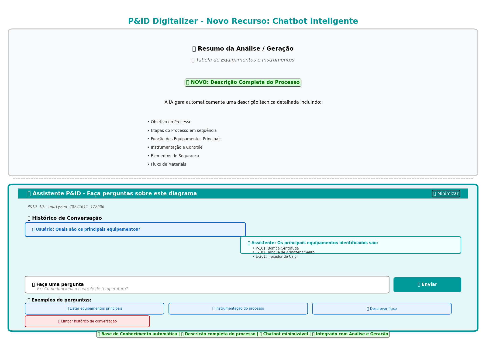
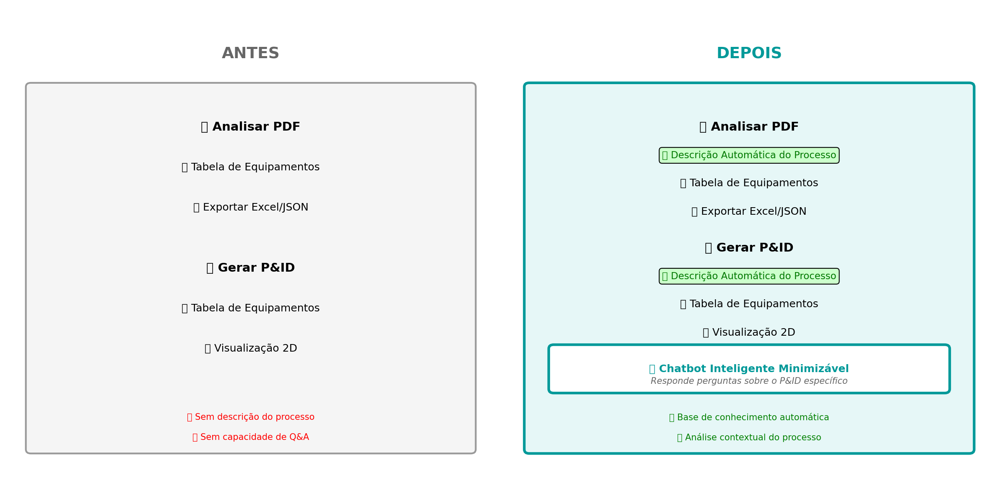

Visualização de como o chatbot aparece na interface do usuário, com todas as funcionalidades:
Veja as novas funcionalidades adicionadas ao sistema:
POST /describe - Gera descrição completa do processoPOST /chat - Responde perguntas sobre o P&IDPOST /store - Armazena P&ID na base de conhecimentoGET /knowledge-base - Lista todos os P&IDs armazenados